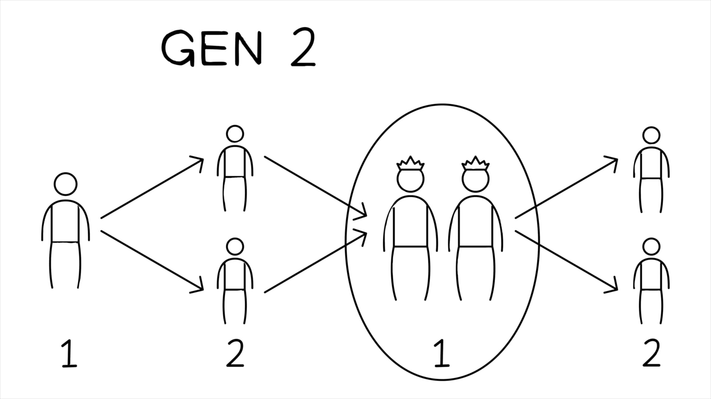

Os dois objetos são literalmente chamados de “árvores” (heb. ‘ets, עץ), que poderia ser tanto um cajado de madeira de algum tipo, ou talvez uma tabuleta de escrita feita de madeira (ver Block, The Book of Ezekiel, Chapters 25–48), que poderia ser unida com outras em um caderno de sortes.The two objects are literally called “trees” (Heb. ‘ets, עץ), which could either be a wooden staff/scepter of some kind, or perhaps a writing tablet made of wood (see Block, The Book of Ezekiel, Chapters 25–48), which could be joined with others into a notebook of sorts.
O ato-sinal é dominado por vocabulário sobre “um/unidade/unificado” (heb. ’ekhad ocorre 11 vezes nesta seção) e prediz a reunificação do povo dividido de Israel, uma ruptura que remonta aproximadamente 400 anos nos dias de Ezequiel (ver 1 Rs 12-13). O ato-sinal enfatiza que há uma única esperança futura em uma única aliança renovada para o único povo de Deus.The sign act is dominated by vocabulary about “one/unity/unified” (Heb. ’ekhad occurs 11 times in this section) and foretells the reunification of the divided people of Israel, a rift that goes back approximately 400 years by Ezekiel’s day (see 1 Kgs. 12-13). The sign act emphasizes that there is one future hope in one renewed covenant for the one people of God.
Ezequiel 37:22-28 retoma vocabulário e imagens de todos os oráculos de esperança nos capítulos 34-37 e os põe juntos em um mosaico:Ezekiel 37:22-28 picks up vocabulary and images from all the oracles of hope in chapters 34-37 and puts them all together in a mosaic.
As linhas finais de 37:26-28 apontam adiante para os capítulos 40-48 com um Israel renovado de volta na terra prometida e o novo templo de Yahweh bem no meio.The final lines of 37:26-28 point forward to chapters 40-48 with a renewed Israel back in the promised land and Yahweh’s new temple right in the middle.

Por que a unidade é um tema tão importante para os autores bíblicos?Why is unity such an important topic for the biblical authors?